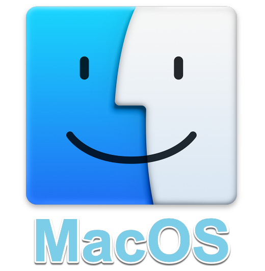

Thunderbird
Introduction
Mozilla Thunderbird is free and open source software that allows you to exchange and store email for multiple accounts with multiple service providers. Enigmail and GnuPGP improve the security and privacy of your email correspondence by adding support for OpenPGP end-to-end encryption to Thunderbird . They also allow you to sign your messages digitally and verify the digital signatures of others.
Gnu Privacy Guard (GPG) is free and open source software capable of encrypting, decrypting and digitally signing messages and files. It also generates and manages the public and private keys needed to do so.
Enigmail is a Thunderbird add-on that allows you to access the encryption and authentication features provided by GnuPG, which must be installed for Enigmail to work.
Things you should know about Thunderbird before you start
Before you start with the installation of Thunderbird, you must have your email account and password that was previously given to you through our technical team leader. If you do not have them, please contact us through the signal application
Before you start with the installation of Thunderbird, you must have your email account and password that was previously given to you through our technical team leader. If you do not have them, please contact us through the signal application
Thunderbird relies on a form of public-key cryptography that requires each user to generate her own pair of keys. This key pair can be used to encrypt, decrypt and sign digital content such as email messages. It includes a private key and a public key:
- Your private key is extremely sensitive. Anyone who managed to obtain a copy of this key would be able to read encrypted content that was meant only for you. They could also sign messages so they appeared to have come from you. Your private key is, itself, encrypted to a passphrase that you will choose when generating your key pair. You should choose a strong passphrase and take care not to let anyone gain access to your private key. You will use your private key to decrypt messages sent to you by those who have a copy of your public key.
- Your public key is meant to be shared with others and can not be used to read an encrypted message or fake a signed one. Once you have a correspondent’s public key, you can begin sending her(him) encrypted messages. Only she (he) will be able to decrypt and read these messages because only she(he) has access to the private key that matches the public key you are using to encrypt them. Similarly, in order for someone to send you encrypted email, they must obtain a copy of your public key. It is important to verify that the public key you are using to encrypt email actually does belong to the person with whom you are trying to communicate. If you or your correspondent are tricked into encrypting email with the wrong public key, your conversation will not be secure.
Thunderbird is available for Microsoft Windows, Mac OS X and GNU/Linux. Securely managing multiple email accounts is a complex task, and we strongly recommend Thunderbird for this purpose.
Before starting to install Thunderbird, you have to be aware of the following add-ons that will allow you to encrypt and decrypt your emails.
Gpg4win:

Gpg4win enables users to securely transport emails and files with the help of encryption and digital signatures. Encryption protects the contents against an unwanted party reading it. Digital signatures make sure that it was not modified and comes from a specific sender.
Gpg4win is an installer for Windows and contains several Free Software components: GnuPG , Kleopatra, GpgOL, GpgEX.
Enigmail:

Enigmail is a seamlessly integrated security add-on for Mozilla Thunderbird. It allows you to use OpenPGP to encrypt and digitally sign your emails and to decrypt and verify messages you receive.
Enigmail:
GPG Suite, an application that brings encrypted email to Mac OS
Four software components are contained in the package: GPG Mail, GPG Keychain, MacGPG, GPG Services.